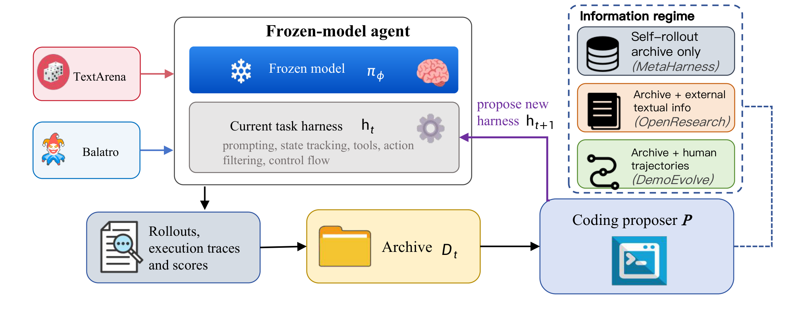
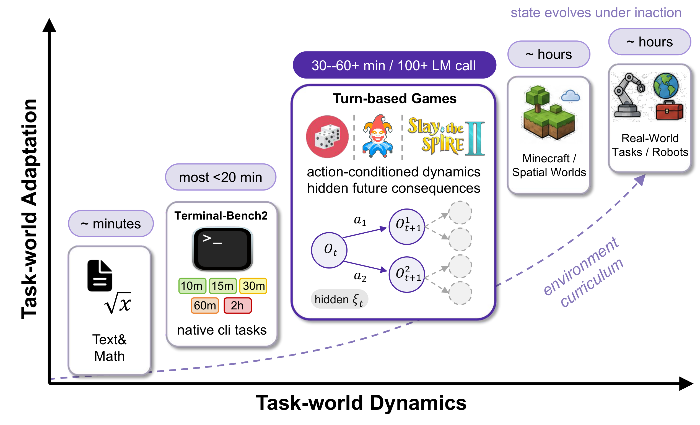
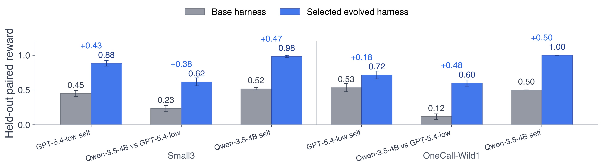
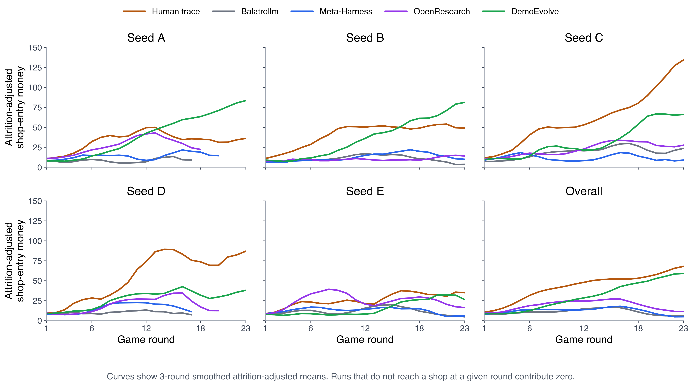

DemoEvolve：用 demonstration 破解 sparse feedback 下的 agent harness evolution
DemoEvolve: Overcoming Sparse Feedback in Agentic Harness Evolution with Demonstrations
①开源贡献 Open-source Artifacts
这是一篇方法 / 实证型 preprint，截至解读日（2026-05-30）没有发布任何官方代码、模型权重或数据集。论文正文、首页、脚注、abstract 页面均未给出 GitHub / Hugging Face / project page 链接，arXiv 页面也无 Comments 字段或代码指引。我通过 WebSearch 检索 "DemoEvolve … AgiBot github" 仅命中论文本身的 arXiv HTML 页，以及一些无关或第三方仓库（如他人复现 Meta-Harness 的 harness-evolver、另一篇 Agentic Harness Engineering 的官方库、AgiBot 的机器人硬件库等），均非本文产出。论文所依赖的两个游戏环境（BalatroLLM / BalatroBench、TextArena）是第三方既有的开源 / 公开资源，本文在其上构建实验但未声称重新开源。
| 类型 | 是否开源 | 内容 / 链接 |
|---|---|---|
| 代码 Code（DemoEvolve / outer-loop） | ✘ | 未发布；论文未给出任何仓库链接，也未声明「将开源」。 |
| 模型权重 Weights | ✘ | 不适用——agent 用 frozen 商用 / 开源模型（GPT-5.4-low、Qwen-3.5-4B），proposer 用 Claude Opus 4.7 Max，均非本文训练。 |
| 数据集 / human trajectories | ✘ | 核心输入是「人类高水平 demonstration」（Balatro 每个 dev seed 9 条、共 9 条；Liar's Dice 同格式），论文未发布这些轨迹。 |
| 环境 / Benchmark（第三方） | ✘（非本文） | Balatro 实验沿用 BalatroBench 与 BalatroLLM；Liar's Dice 用 TextArena。均为外部已有项目，非本文新开源。 |
| 项目主页 / Demo | ✘ | 未见。 |
②研究动机与贡献 Motivation & Contribution
背景：harness evolution 是什么、为什么诱人
一个 LLM agent 的能力，不只由模型权重决定，也由它外围那套执行结构决定——prompt 怎么写、observation 怎么表示、哪些 action / tool 暴露给模型、模型输出怎么 parse、多步怎么编排。本文用 harness 统称这些「围绕 frozen model 的可执行程序」。近期一类工作（Meta-Harness、ADAS、AFlow、Darwin-Gödel Machine、Autoharness 等）把 harness 当作可搜索 / 可编辑的对象：让一个 coding proposer 检查历史代码、分数、execution trace，然后写出新的 candidate harness，外层循环不断迭代。其吸引力在于：这等于把「agent 变强」变成一种 sample-efficient fast adaptation——不重训模型、不冒权重空间干扰通用能力的风险，只改外部 harness 就能获得 task-specific 的能力。
痛点：在 long-horizon、随机、sparse-reward 的世界里，self-evolution 会失灵
问题是，已有 harness evolution 的成功几乎都集中在文本 / 代码为中心的领域（现代 LLM 在这些领域已有很强先验，改 harness 主要是「把潜在能力激发出来」）。本文追问：同一范式能不能迁到 LLM-non-native 的任务世界——那里光靠激发潜在知识不够，harness 必须帮 agent 构建 state abstraction、动作优先级、resource management。作者用回合制游戏作为受控的过渡 regime（见图 1）：fixed seed + 明确 action 接口让 candidate 之间可复现地比较，但随机事件与延迟结果又让任务真的「有动态、有状态」。
在这种中间 regime 下，harness evolution 的一个核心假设被压力测试：「过往经验必须足够可诊断，才能指导下一次程序编辑」。短 horizon 任务里这通常成立（failure 局部、trace 短、容易归因）；但长 horizon 交互世界里，sparse 的最终结果可能延迟且具误导性——一次失败 run 里可能有几百个 state transition，早期一个小决定就会重塑后续 state 分布，而随机性会让一个根本没生效的 harness edit「碰巧」拿到高分。于是真正的难点不只是「在 harness 程序空间里搜索」，而是 credit assignment：从噪声极大的 trajectory-level 反馈里，推断「到底该改外部哪个机制」。
作者把两类「变好」严格区分开：
- score improvement（分数变好）：dev rollout 上分数升高——但可能纯属 trajectory variance / seed-specific 选择噪声。
- functional harness improvement（功能性变好）：新 harness 逻辑确实改变了 model-facing 接口或执行行为，且这种改变是可审计的。后者才是真改进。
切入点：用「人类 demonstration」当 proposer 的专家参照
核心 insight：当「只看 reward」的搜索过于发散、过于嘈杂时，少量称职的人类 demonstration trajectory 可以充当 proposer 的专家参照经验。因为人类轨迹用和 agent rollout 完全相同的 observation-action 格式记录，它同时暴露了「称职动作」以及「这些动作发生在哪些具体 state」。这让 proposer 能把失败的 agent rollout 与称职玩法直接对照，从而定位缺失的 state abstraction、糟糕的 action priority、薄弱的 resource management 或缺失的 tool——也就是把 sparse、难归因的 failure 变得 diagnosable & localizable。关键是：human trajectory 在这里不是监督式 action label、也不用于 fine-tune 模型，而是作为 proposer 做诊断/编辑时的 behavioral exemplar + diagnostic reference。
核心贡献
- 提出 DemoEvolve：一种 demonstration-bootstrapped 的 harness evolution 方法。它在 self-rollout archive 之外，额外给 proposer 提供一个称职人类轨迹库，作为 harness-level 诊断与编辑的「proposer-side 参照经验」。
- 揭示 self-rollout evolution 在交互任务里的「noisy-selection 失效模式」：即便同一 fixed seed，frontier LLM 早期动作也会抖动；同 seed 的 rollout variance + 轨迹漂移累积，会让 sparse 分数偏爱 inactive / noncausal 的 harness edit。论文用 Balatro 上的一次「render-level 审计」给出实锤（见 ④）。
- 用 Balatro 证明 demonstration 让 sparse-feedback evolution 更有效且可审计：相同有限预算下，DemoEvolve 产出真正 model-facing、active 的编辑，性能优于 self-rollout 与 text-guided 变体，并给出行为层（economy curve 更像人）与诊断层（edit localization 更准）的证据。
③方法 Method

3.1 问题形式化：围绕 frozen model 优化一个不可微 harness
沿用 Meta-Harness 的视角，把 harness evolution 看成对「围绕 frozen model 的可执行程序」做端到端优化。设 $W_T$ 是一个 task world，$x\sim\mathcal{X}_T$ 是一个 episode 实例，$\pi_\phi$ 是 frozen model（参数 $\phi$ 全程不变），$h\in\mathcal{H}_T$ 是面向任务的 harness。$W_T,\pi_\phi,h$ 三者共同诱导出一个关于交互 trajectory 的 rollout 分布。优化目标为：
$$ h^{*}=\arg\max_{h\in\mathcal{H}_T}\ \mathbb{E}_{x\sim\mathcal{X}_T,\ \tau\sim p_{W_T,\pi_\phi,h}(\cdot\mid x)}\big[R_T(\tau,x)\big]. $$其中 $\tau=(o_0,a_0,o_1,a_1,\ldots,o_T)$ 是 task-world 交互 trajectory，$R_T(\tau,x)$ 是一个 sparse task reward，通常只在整段 rollout 结束后才观测到。所有改进都来自改写可执行 harness $h$，模型权重一动不动。
3.2 受控动态：区分 evaluator 视角与 agent-facing uncertainty
作者刻意把「评测者看到的 fixed-seed 模拟器」和「agent 通过 harness 看到的视角」分开。设完整 task-world 状态为 $\tilde{s}_t$，给 agent 看到的 observation 为 $o_t=\Omega(\tilde{s}_t)$，episode seed 为 $\rho$。固定 seed 下，全状态转移可以是确定性的 $\tilde{s}_{t+1}=F_\rho(\tilde{s}_t,a_t)$——这保证了同 seed 重复评测可复现。但「评测者可复现」不等于「agent 知道自己动作的未来后果」：agent 只能依据自己的 observation-action history $\eta_t=(o_0,a_0,\ldots,o_t)$ 行动，下一个 observation 在 agent 接口处仍然是不确定的：
$$ p_\rho(o_{t+1}\mid \eta_t,a_t)=\sum_{\tilde{s}\in\mathcal{S}} p_\rho(\tilde{s}_t=\tilde{s}\mid \eta_t)\,\mathbf{1}\!\left[o_{t+1}=\Omega(F_\rho(\tilde{s},a_t))\right]. $$作者称之为 agent-facing uncertainty：它来自「observation 把完整 state 压缩后导致 agent 信息不全」，而非「模拟器变量定死后还残留的内在随机性」。回合制游戏因此提供了一个理想的受控动态 regime：既有 action-conditioned 的未来后果与延迟反馈，又保留 fixed seed + 明确 action 接口以支持可复现的 harness evolution。
3.3 outer-loop proposer 与三种 information regime（核心）
用一个 outer-loop proposer $P$ 来优化 $h$。注意 $P$ 是一个 coding agent，而非执行任务的 agent 本身。每轮迭代，它检查历史 harness 及其评测产物、诊断可能的 failure mode，写出一个或多个 candidate harness。沿用 Meta-Harness 的 search loop，维护一个不断增长的文件系统 archive $\mathcal{D}_t$：每个被评测过的 harness 贡献一个 evaluation directory，里面有它的源码、dev-set 分数、rollout trajectory、以及 raw execution trace（记录给模型看的 context、模型输出、parse 出的 action、tool call、报错、harness 侧 log）。proposer 通过普通的文件读写去查询这个 archive，而不是收到一份压缩摘要——这点对「能否真正定位机制」很关键。
记第 $t$ 轮提出的 candidate 数为 $k_t$，更新规则：
$$ \{h^{(t+1,j)}\}_{j=1}^{k_t}\leftarrow P(I_t),\qquad \mathcal{D}_{t+1}=\mathcal{D}_t\cup\{\mathrm{EvalDir}(h^{(t+1,j)})\}_{j=1}^{k_t}, $$其中 $I_t$ 是当前 proposer 能看到的信息，$\mathrm{EvalDir}(\cdot)$ 是 candidate 在 dev 实例上跑完后写出的评测目录。最终 test 实例全程对 proposer 不可见（held out）。本文的唯一变量就是 $I_t$，由此定义三个 regime：
$$ I_t^{\mathrm{meta}}=\mathcal{D}_t,\qquad I_t^{\mathrm{open}}=\mathcal{D}_t\cup K^{\mathrm{text}},\qquad I_t^{\mathrm{demo}}=\mathcal{D}_t\cup T^{\mathrm{human}}. $$- Meta-Harness（self-rollout-only，本文的主基线）：proposer 只看 archive $\mathcal{D}_t$——历史 harness 代码、分数、自己跑出来的 rollout、raw trace。
- OpenResearch（text-guided）：在 $\mathcal{D}_t$ 之外，额外给 proposer 外部文字任务信息 $K^{\mathrm{text}}$（规则、tutorial、攻略、reference code，Balatro 实验中甚至允许 proposer 联网搜索）。它检验「光有高层文字知识够不够」。
- DemoEvolve（本文）：在 $\mathcal{D}_t$ 之外，额外给 proposer 一组称职人类轨迹 $$ T^{\mathrm{human}}=\{(\tau_j^H,\,R_T(\tau_j^H,x_j))\}_{j=1}^{m},\qquad \tau_j^H=(o_0^H,a_0^H,o_1^H,a_1^H,\ldots,o_{T_j}^H). $$ 这些人类轨迹用与 agent rollout 相同的 observation-action 格式表示，但动作来自称职的人类玩法。
3.4 实现协议要点（影响复现）
- 统一起点与预算：所有演化条件都从同一个初始 harness 出发（Balatro 用 BalatroLLM）、跑 10 轮 outer-loop，每轮典型产出 ~2 个 candidate；唯一差异就是 proposer 可见信息。
- 模型设定：Balatro 的执行 agent 全用 frozen GPT-5.4-low；coding proposer 全用 Claude Opus 4.7 Max。Liar's Dice 还测了 GPT-5.4-low 与 Qwen-3.5-4B 的多种对局/自对弈组合。
- seed 划分（防 leakage）：Balatro 用 BalatroBench 的 5 个 fixed seed，A/B/C 作 development（演化期可见，每 candidate 每 seed 1 条 rollout），D/E 全程 held out 仅用于最终评测；选中的 harness 再在全部 5 个 seed 上各跑 3 条独立 rollout 重评。DemoEvolve 的人类轨迹也只给 dev seed A/B/C（每 seed 3 条、共 9 条），D/E 无人类轨迹。
- 选择规则：candidate 只能用 development rollout 来选；以 A/B/C 上的平均 final round 为主指标、completion rate 作 tie-breaker。
- 成本量级（按 GPT-5.4-low 计，仅 task-execution rollout，不含 proposer）：一次完整演化 run 约 $128（10×2×3=60 条 dev rollout）；加上选中 harness 的 fixed-seed 终评（5 seed×3 rollout=15 条，约 $32），总计约 $160 / run。
- Liar's Dice 搜索预算更小：candidate 评测常用 $N{=}5$ 个 dev seed（部分 Small3 用 $N{=}10$），终评用 30 个逻辑 held-out seed 做 paired-side control（每 seed 两局、交换先后手，胜=1/平=0.5/负=0）。
④实验评估 Evaluation
评测设置
- Benchmark：
- TextArena Liar's Dice（短 horizon「正对照」）：含随机骰、隐藏信息、对手博弈、legal-action 约束的回合制博弈。两个变体——Small3（三骰、顺序叫注/质疑）与 OneCall-Wild1（五骰、ones 为 wild、首次 [Call] 立即结束）。episode 短，失败容易归因，用来确认「当反馈可归因时，self-rollout evolution 本来就能 work」。
- Balatro（长 horizon「困难情形」）：扑克 build 类 roguelike，要在 seed-dependent 抽牌、shop、boss blind、joker synergy 下做延迟的 resource management。terminal 反馈 sparse、high-variance、难归因——专门用来检验 demonstration 能否让搜索更可诊断。
- 对比基线：BalatroLLM（不做 outer-loop 的固定 harness）、Meta-Harness（self-rollout-only evolution，即「只靠自我演化」的对照）、OpenResearch（text-guided evolution）；本文为 DemoEvolve。
- 指标：Balatro 用 capped mean final round（生存深度，越高越好）+ 括号里的 completion rate；TextArena 用 30 个 held-out seed 上的 mean paired reward（越高越好）；另有「attrition-adjusted shop-entry money」economy curve 与「与人类曲线的平均绝对距离 human dist.」（越低越像人）。

结果一：Liar's Dice——self-rollout 也能发现紧凑的可执行 heuristic（正对照成立）
当 horizon 短、failure 可归因时，outer-loop 确实能把观测到的失败转成可执行的 harness 结构。如图 3，6 组对局/模型配置里全部 6 组的 held-out paired reward 都提升；task-balanced 的 macro held-out reward 从 base 的 0.392 → 0.800（绝对 +0.408）；Small3 从 0.400→0.828、OneCall-Wild1 从 0.383→0.772。机理上，演化出的 harness 反复加上 task-specific 结构：observation parsing、legal-action guard、bid repair、概率估计、expected-value 的 call 阈值、开局策略、保守的 safety override。附录的 case study 显示，弱模型（Qwen Small3）下选中的 harness 近乎变成一个 near-symbolic threshold policy（几乎绕开模型决策）；更强模型 / 更难变体下则保留 neuro-symbolic 分工——代码管 legality / 概率 / 风险，模型管残余的战略判断。

结果二：Balatro——sparse 反馈会误导长 horizon 搜索，而 DemoEvolve 不会
这是全文最关键的对照。下表（原文 Table 1）显示：
| 方法 | ID-A | ID-B | ID-C | OOD-D | OOD-E | ID 均值 | OOD 均值 | Overall |
|---|---|---|---|---|---|---|---|---|
| BalatroLLM（固定 harness） | 12.0 (0/3) | 22.0 (1/3) | 17.0 (2/3) | 12.7 (0/3) | 21.0 (2/3) | 17.00 (3/9) | 16.83 (2/6) | 16.93 (5/15) |
| Meta-Harness（self-rollout-only） | 16.7 (0/3) | 23.0 (2/3) | 18.3 (2/3) | 13.7 (0/3) | 19.0 (2/3) | 19.33 (4/9) | 16.33 (2/6) | 18.13 (6/15) |
| OpenResearch（text-guided） | 17.3 (0/3) | 15.0 (1/3) | 17.7 (1/3) | 14.0 (0/3) | 20.0 (2/3) | 16.67 (2/9) | 17.00 (2/6) | 16.80 (4/15) |
| DemoEvolve（本文） | 22.0 (2/3) | 24.0 (3/3) | 24.0 (3/3) | 16.0 (1/3) | 24.0 (3/3) | 23.33 (8/9) | 20.00 (4/6) | 22.00 (12/15) |
读这张表的关键不在「谁分高」，而在归因可靠性：
- Meta-Harness 出现了「假提升」：它在 ID seed 上 final round 从 17.00→19.33、completion 从 3/9→4/9，看起来有效；但不迁移——OOD 从 16.83→16.33、completion 仍 2/6。作者于是对选中的 harness 做了 render-level 审计（见下方），证明它的「提升」其实是高方差 rollout 评测下的 noisy candidate selection，而非真正的功能性改进。
- OpenResearch（光给文字攻略）也没用：Overall 仅 4/15，甚至不如 self-rollout，说明高层文字知识本身不足以驱动长 horizon harness 改进。
- DemoEvolve 在 ID 与 OOD 上都真正变好：ID 8/9、OOD 4/6、Overall 12/15 完成；且审计显示其编辑是 active、model-facing 的，注入了 state 相关、phase 相关的信息，根植于人类轨迹证据。
face_exposure_shop_hook，号称为 boss blind「The Plant」（会 debuff 所有 face card）在 SHOP 阶段加一个 face-card 相关的 hook，source diff 非空。作者把这个 harness 在固定 seed 下加 logging 重放、检查 A/B/C 三条 validation rollout 共 517 个 request，统计该 hook 的标志性字符串出现次数：
Expected hook string Occurrences
Face-Card Exposure Metrics 0
Deck face cards 0
face-dependent jokers 0
The Plant boss disables 0结果三：行为分析——人类 demonstration 迁移的是「策略层模式」，不是「运气」
作者进一步问：DemoEvolve 分数更高，到底是行为变了、还是只是抽到好 harness？他们用 Balatro 的 economy（经济管理）作为长 horizon 策略的粗粒度但可测的探针——既要保住钱、又要把资源转成足够的得分力。为避免 survivorship bias，定义attrition-adjusted shop-entry money：对在第 $r$ 个 shop 前已经「死掉」的 rollout 记 0。
$$ \widetilde{M}_{m,s}(r)=\frac{1}{N_{m,s}}\sum_{i=1}^{N_{m,s}}\widehat{M}_i(r),\qquad \widehat{M}_i(r)=\begin{cases}M_i(r),& \text{若 rollout } i \text{ 到达 shop } r,\\[2pt]0,& \text{否则.}\end{cases} $$这样后期 round 的曲线同时反映「生存」与「钱的管理」。结果（原文 Table 2）很说明问题：
| 方法 | Adj. entry mean | Late adj. entry | Late reach | Human dist.↓ | Late human dist.↓ |
|---|---|---|---|---|---|
| Human trajectories（参照） | 42.99 | 61.87 | 1.00 | 0.00 | 0.00 |
| BalatroLLM | 10.89 | 6.61 | 0.39 | 32.10 | 55.25 |
| Meta-Harness | 12.16 | 6.97 | 0.45 | 30.83 | 54.89 |
| OpenResearch | 18.96 | 13.51 | 0.32 | 24.03 | 48.36 |
| DemoEvolve（本文） | 30.73 | 55.37 | 0.81 | 12.26 | 6.49 |
Meta-Harness 的 economy profile 相对 BalatroLLM 几乎没变（overall human dist. 仅 32.10→30.83，late 仍很高）；OpenResearch 整体靠近了人类曲线（24.03），但 late reach 仅 0.32，没可靠转成生存。DemoEvolve 则质变：overall human dist. 降到 12.26、late human dist. 从 ~55 骤降到 6.49、late reach 仍达 0.81——支持「人类轨迹帮 evolved harness 形成了类人的 resource-management 模式」，而不是靠 lucky harness 选择刷高最终分。图 4 直观可见：DemoEvolve（绿）在各 seed 上都贴着 Human trace（橙）走，而其它基线（灰/蓝/紫）后期都趴在低位。

结果四：localization 分析——demonstration 改善「state-conditioned 的编辑定位」
作者用一个独立于演化 run 的 5×3 诊断/设计研究把「定位能力」单独拎出来：所有 arm 都看同一批固定的 BalatroLLM rollout，只在「额外证据」上不同——none / human notes（人类文字笔记）/ human trajectories；每个 arm 用 5 个独立 proposer replica 去诊断 failure 并提出具体 edit site。按「context 注入粒度」给 edit 分类：Pers.（持久 context）、Phase（仅由环境 phase 字段触发的 middleware）、State（harness 触发的、在注入前计算 decision 变量）、Tool（对当前 state 做 model-invoked 计算）。报告 Comp. rate = (State + Tool) / total，即「提供可执行决策支持」的 edit 占比。
| 额外证据 | Pers. | Phase | State | Tool | Comp. rate |
|---|---|---|---|---|---|
| None（只看 rollout） | 7/26 | 7/26 | 10/26 | 2/26 | 46.2% |
| Notes（人类文字笔记） | 9/23 | 9/23 | 1/23 | 4/23 | 21.7% |
| Human trajectories（本文） | 8/22 | 4/22 | 6/22 | 4/22 | 45.5% |
有意思的对照：只看 rollout 时 Comp. rate 反而高（46.2%），但这是「负向证据」——rollout 只能定位失败处的可见缺陷（哪里崩了），却说不出「称职玩法本该怎么做」。只给文字 Notes 时，proposer 拿到的是「原则」，但缺乏 observation-action 对齐，编辑大多退化成持久 / phase 级提醒，Comp. rate 掉到 21.7%。人类轨迹提供了正向的 state-action counterfactual：既恢复了可比的 Comp. rate（45.5%），又把「计算型干预」锚定在「应在何时注入/调用」的具体 state 上。
round1_dig_hint，由 hands_played==0、discards_left≥2 与 early ante 来 gate。结论：rollout 定位价值损失、notes 给出原则、human trajectory 指定 harness 干预该在何时触发。
⑤洞见 Insights
局限与未来
作者自陈的主要局限是任务覆盖面：DemoEvolve 主要在 Balatro 上评测，TextArena Liar's Dice 仅作短 horizon 正对照——Balatro 虽是有用的长 horizon 随机 testbed，但仍只是单一游戏环境。未来应检验 demonstration-bootstrapped harness evolution 能否推广到更广的交互场景：其它游戏、tool-use agent、terminal task、web agent、embodied environment。此外（我个人判断）：① 方法对「高水平人类轨迹」有依赖，采集成本与「称职」标准在更复杂任务里可能成为瓶颈；② 论文强调的 functional audit 目前是人工 / 半自动的，如何让它在 outer-loop 内自动化、变成 proposer 的 selection 信号，是个自然的后续；③ 实验规模偏小（10 轮、每 candidate 仅少量 long rollout），作者也明确说这是工程上的权衡而非「分数无方差」的断言，数字宜与 held-out 迁移 + 审计 + 行为分析合起来看。
与相关工作的关系（基于本文自述）
DemoEvolve 直接建立在 Meta-Harness 的「把 harness 当端到端可优化程序、用文件系统 archive 驱动 outer-loop 搜索」框架之上，并把它当作 self-rollout-only 的主基线；同一脉络还包括 ADAS、AFlow、Darwin-Gödel Machine、AlphaEvolve、Autoharness、self-improving coding agent 等。另一条相关线是「把交互历史转成可复用的 reflection / memory / skill」（Reflexion、Voyager、ExpeL、Skillclaw、Memevolve 等），它们通常假设过往 trajectory/log 里能抽出改进信号；本文的差异在于：明确研究当 self-generated experience 在 non-model-native、长 horizon、failure 稀疏且难归因时是否还够用，并给出否定证据 + demonstration 的补救。与 imitation learning / learning from demonstrations（DAgger、GAIL、DQfD 等）相比，本文「精神相通但对象不同」：模型权重保持 frozen，被优化的是外部 harness，demonstration 与 opponent-conditioned 轨迹是用于 harness-level 诊断/编辑的反馈，而非直接训练 policy。它也呼应 curriculum / 探索文献中「控制早期经验分布、reach 到 informative state」能提升优化稳定性与样本效率的观点。